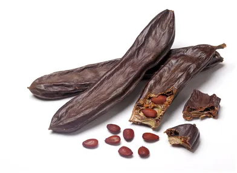

Darmowy chleb na wagę złota.
Temat jest wielowątkowy, dziś geneza i trochę o inwestowaniu. Chleb świętojański poznałem w Turcji jako karob. Co dzień starszy pan przechodził rano koło hotelu a potem wracał z lasu z wielkim workiem pełnym tych strąków. To był późny wrzesień. W mieście na bazarze za kilo trzeba było zapłacić może z 3 zł. Jesienią strąki są jeszcze miękkie, lekko czekoladowe, są lepsze od sneakersów, bardzo pożywne i zdrowe, kilka sztuk zastępowało dobre śniadanie. Każdy wędrujący w pobliżu Morza Śródziemnego bez trudu może przez wiele dni się tak żywić. Syn marnotrawny, gdy już nie miał nic jadł "strąki, które dawano świniom", tak zapisano w Ewangelii. To są właśnie te strąki. Ich rola w powstaniu naszej kultury jest ogromna. Roślina jest bardzo kaloryczna i zdrowa, dobrze się przechowuje, sprzyja płodności. Najstarsze osady, gdzie wytapiano żelazo noszą ślady upraw szarańczynu strąkowego. O jego mylnej nazwie jest poprzedni post.
Nazwa karob to echo słowa karat. Gdy zajadamy się tymi leśnymi batonikami trzeba tylko uważać na pestki. Są bardzo twarde i nie nasiąkają łatwo wilgocią przez co trzymają wagę. Z tego powodu od zarania cywilizacji były miarą w handlu złotem i szlachetnymi kamieniami.

Każde z nasion waży 0.2 gram, właśnie tyle, ile jubilerski karat. Tu uwaga, próba złota wyrażona w karatach jest inną miarą, jest miarą procentową. Mówi, ile czystego złota jest w 24 karatowym kawałku "złota". Czyli moneta ważąca 24 karaty (4,8 gram) może mieć np. 18 karatów złota i 6 miedzi. Złota zatem jest 3,6 grama bo 18/24 daje 75%. Czyste złoto jest zbyt miękkie i zwykle obraca się jego stopami. Powszechnie stosowane w biżuterii złoto 14 karatowe to 58,3%. Obecnie w Polsce stosuje się próby 585 a nie 583. Oszczędności i inwestycje złote robi się w przedmiotach 22 karatowych i wyżej, czyli ponad 90% kruszcu w stopie. Jedząc chleb świętojański inwestujemy w zdrowie. Smacznego!
Paweł Klimczewski